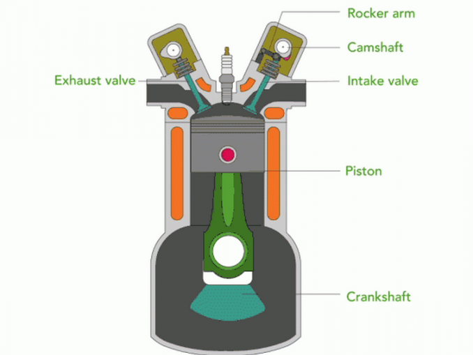
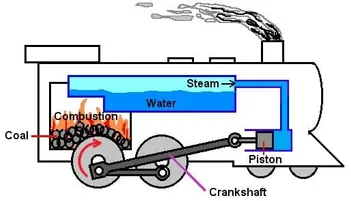
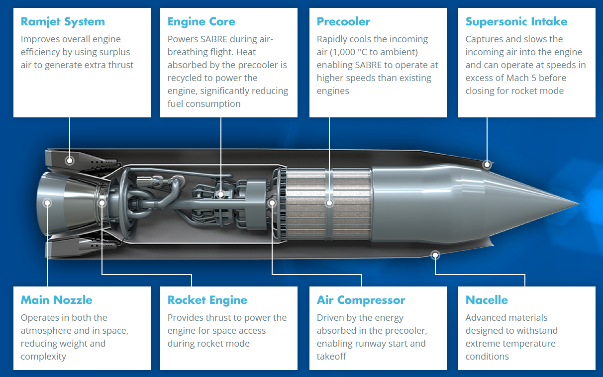
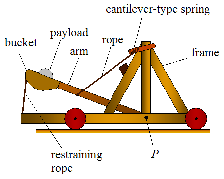

The Engine of a car
The engine of a car runs the car using fuel from the fuel tank. It is usually located near the front of the car. The engine actually powers the car through thousands of small explosions/combustions made through combining the fuel with oxygen and burning it. This process can be somewhat complex, but after the combustion, the engine uses the resulting heat and energy released from the gasoline to convert it into mechanical work or torque to then move the wheels.

The Different Types of Engines
Not all Engines are made the same way. There are different types of engines which have their own pros and cons. The most intuitive way to differentiate between these engine is by looking at the type of energy each engines uses for power. The different types of Engines are:
- Thermal Engines:
These Engines require a source of heat to convert into motion. Depending on how they generate said heat, they can be combustive burn stuffor non-combustive engines. They can function either through direct combustion of a propellant or through the transformation of a fluid to generate work- Internal Combustion Engines(IC Engines): IC Engines are pretty common today. They power cars, lawnmowers, helicopters, and so on. The biggest IC engine can generate up to 109,000 HP to power a ship that moves around 20,000 containers. These engines get energy from fuel burned inside a specialized area of the system called a combustion chamber. The process of combustion generates reaction products (exhaust) with a much greater total volume than that of the reactants combined(fuel and oxidizer). This expansion is the actual bread and butter of IC engines -- this is what actually provides the motion. IC Engines can be differentiated by the number of cycles each piston makes for a full rotation of the crankshaft, the type of fuel used, the number of cylinders, total displacement, distribution of cylinders, as well as power and power-to-weight output. 
- External Combustion Engines(EC Engines): EC Engines keep the fuel and exhaust products separately. They burn fuel in one chamber and heat the working fluid inside the engine through a heat exchanger or the engine's wall. The grand daddy of the Industrial Revolution, The Steam Engine also falls into this category. IC Engines and EC Engines are both similar in the way that they both require heat which is obtained by burning stuff, however, there are also several differences. For Example: EC Engines use fluids that undergo thermal dilation-contraction or a shift in phase, but whose chemical composition remains unaltered. The used fluid can either be gaseous, liquid, or undergo a change of phase. For IC Engines however, the fluid is almost universally a liquid fuel and air mixture that combusts. Today, EC Engines(steam engines) have fallen out of widespread use since they are heavy, bulky things, have a much lower fuel efficieny and power-to-weight ratio than IC Engines, and cannot change output as quickly. However, EC Engines are currently employed with great success as steam turbine engines for naval operations and power plants. 
- Reaction Engines: Reaction Engines, also known as jet engines, geenrate thrust by expelling reactionary mass. The basic principle behind a reaction engine is Newton's Third Law.Basically, if you blow something with enough force through the back end of the engine, it will push the front end forward And These Reaction Engines are really good at following this principle. 
- Physical Engines:
These Engines rely on stored mechanical energy to function. Examples of physical engines include: Clockwork engines, pneumatic, and hydraulic engines. These kinds of engines are not terribly efficient. They usually cannot call upon large energy reserves either. Ex: Clockwork engines store elastic energy in springs, and need to be wound every day. Even with there drawbacks, physical engines were probably the first ever used engines. Catapults, Trebuchets, or battering rams all rely on this type fo engines.

So What now...
Well now that you know a lot more detail about the backbones of almost all cars, you can get a better grasp of just how your car works. You can also use this info plus the info provided about the other components of a car to better understand what kind of car you would like to buy and how to maintain that car so that the car can run smoothly for as long as possible